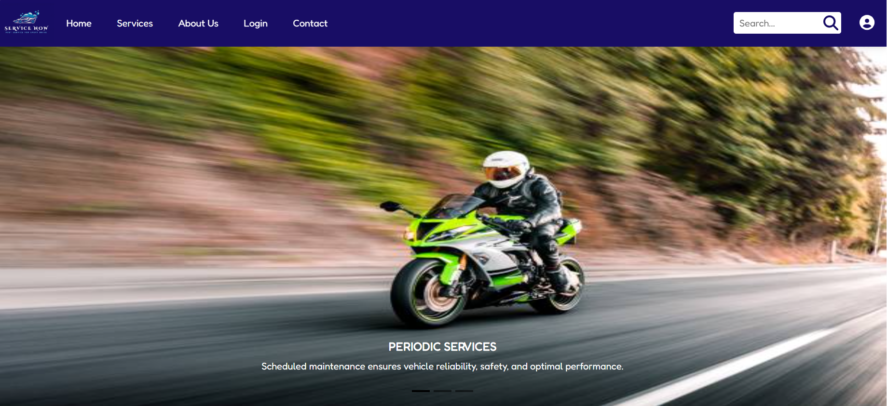
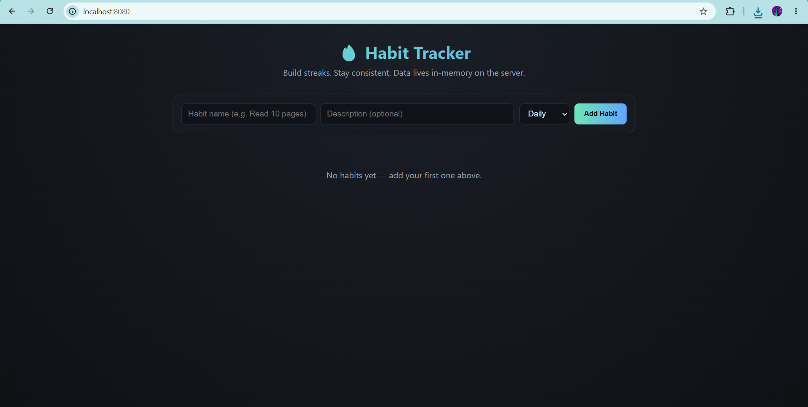
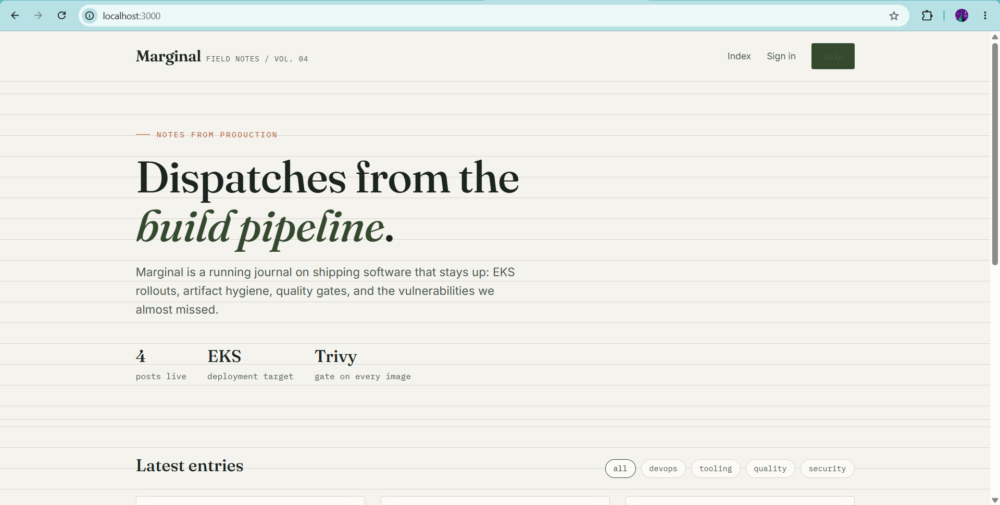
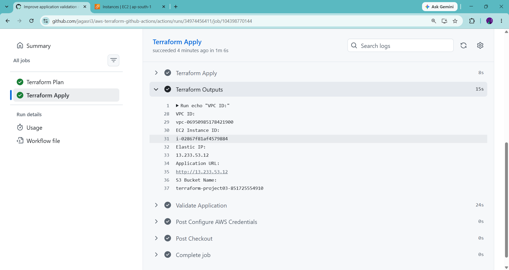

Hello, I'm
Jagasri
Aspiring Software & DevOps Engineer
I build practical web applications and explore cloud infrastructure, automation, and CI/CD. I enjoy turning ideas into reliable, user-friendly solutions and learning by building real projects.
developer.profile•••
JS
Jagasri
IT Graduate
const passion = "building";
const mindset = "keep learning";
return "impactful work";
A LITTLE ABOUT ME
From Code to Cloud.
From Ideas to Impact.
I’m an Information Technology graduate with hands-on project experience across full-stack development and cloud/DevOps tooling. I’ve worked with React, Java, Spring Boot, MySQL, Docker, Jenkins, Terraform, AWS, and GitHub Actions through practical projects and guided learning.
Let’s Connect ↗4+Hands-on projects
10+Tools & technologies explored
Always learning
MY TOOLKIT
Skills & technologies
Tools I’ve used in projects and hands-on practice.
Backend & Database
Cloud & DevOps
Developer tools
SELECTED WORK
Projects I’ve built

VEHICLE SERVICE BOOKINGService Now
↗A vehicle service booking platform designed to help customers explore services and book appointments through a clean web interface.

HABIT TRACKER APPLICATIONHabitApp
↗A habit-tracking application focused on creating, managing, and tracking daily habits with a Spring Boot backend.

BLOG APPLICATIONBlogReact
↗A blog application with a React frontend and Node.js/Express backend, configured with MySQL and Docker for local deployment.

AWS INFRASTRUCTURE AUTOMATIONAWS Infrastructure Automation
↗Terraform infrastructure provisioning with a GitHub Actions workflow for formatting, validation, planning, approval, and deployment.
THE FOUNDATION
Education & growth
B.Tech — Information Technology
2022 – 2026Sri Krishna College of Technology
Built a foundation in software development, databases, web technologies, and IT systems. CGPA - 7.14
Project-based technical learning
2026Hands-on labs & guided training
Practiced containerization, CI/CD pipelines, infrastructure as code, cloud fundamentals, and code-quality workflows through project work.
EXPLORE MY PROFESSIONAL PROFILE
LET'S CONNECT
Let’s build something
meaningful together
I’m open to entry-level IT opportunities, software development roles, and collaborative projects where I can apply my technical skills, learn new technologies, and contribute to a team.
jagasrimvl.com